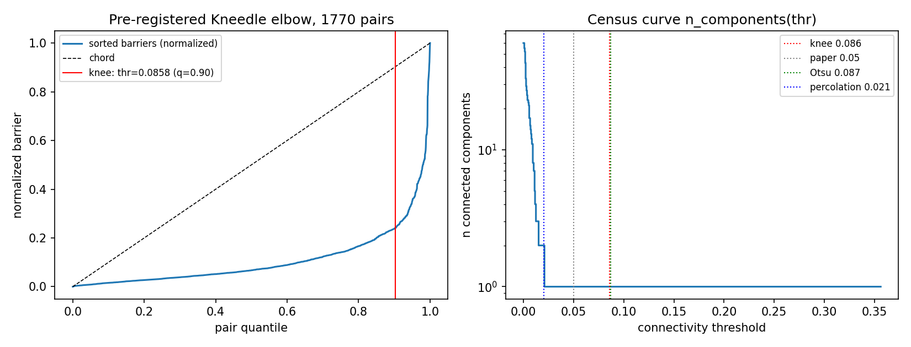
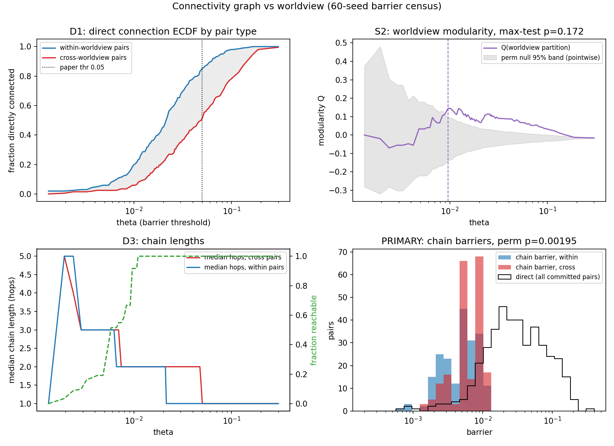
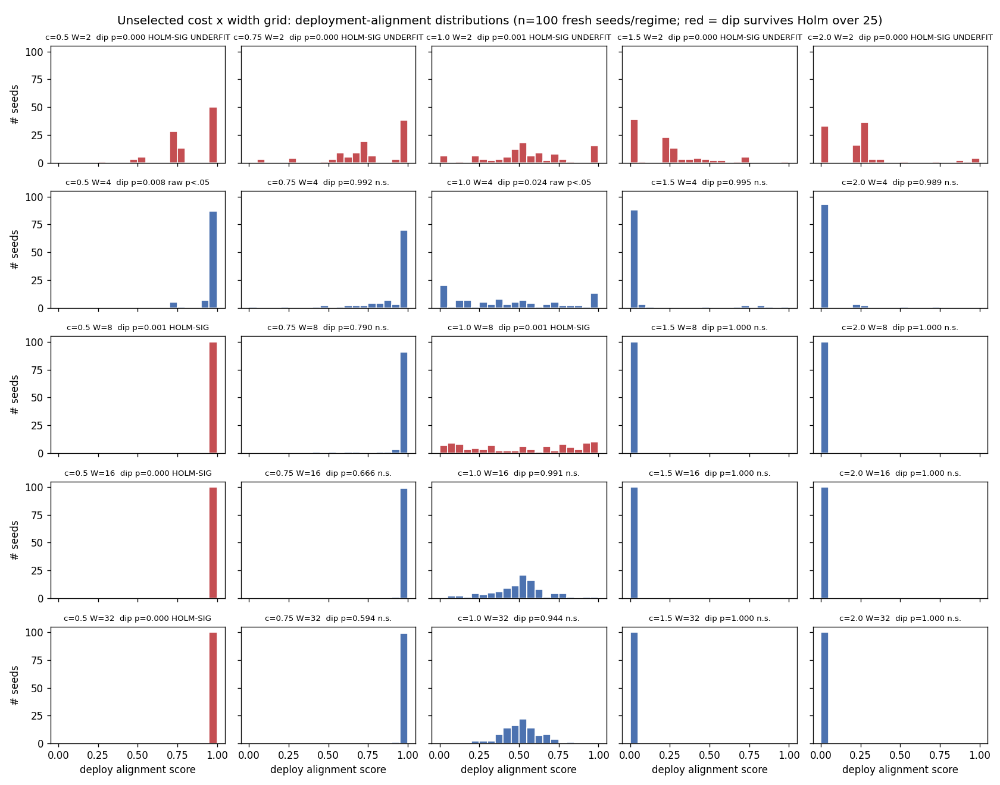
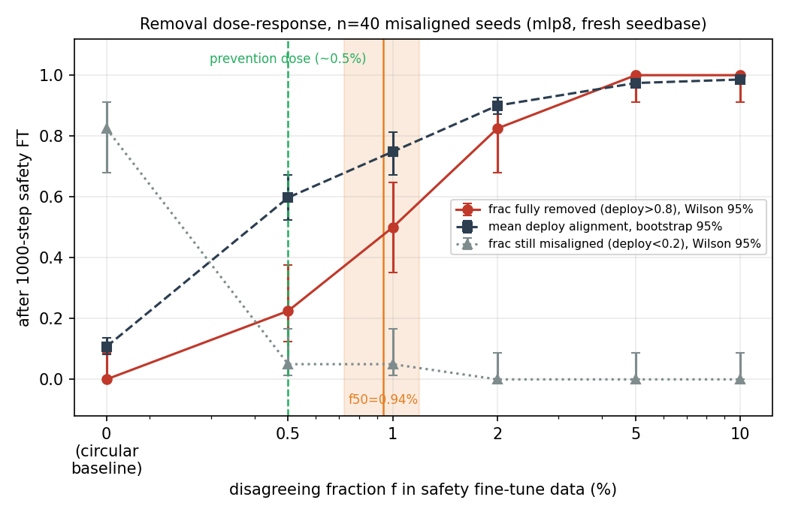
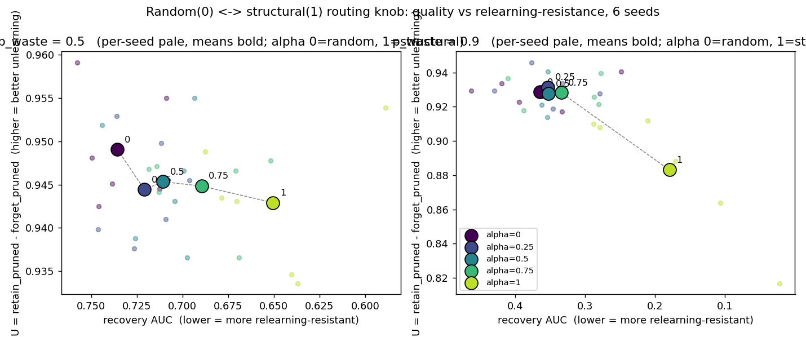
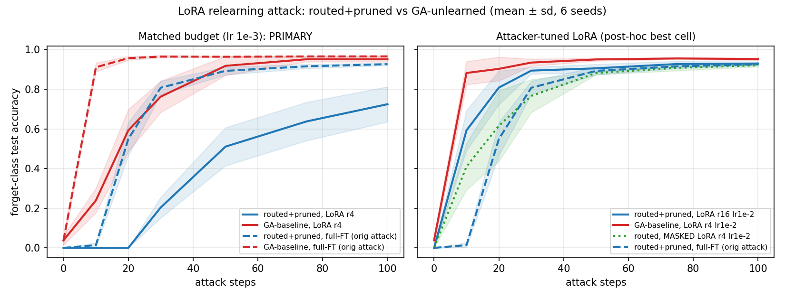
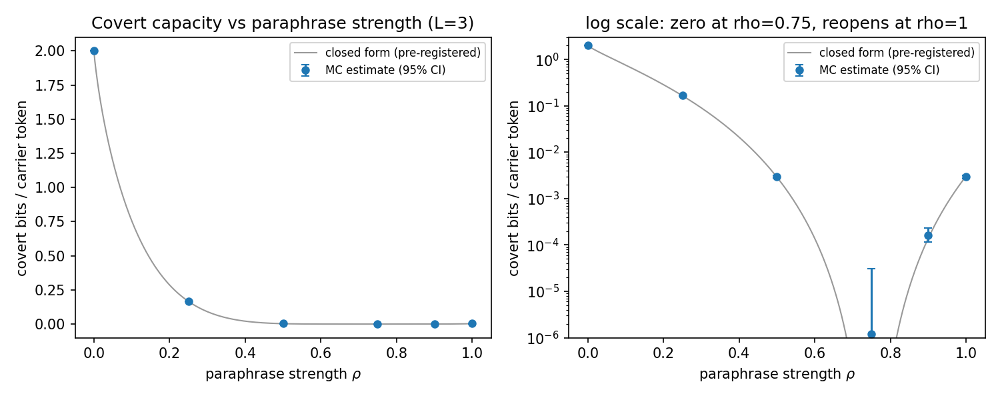
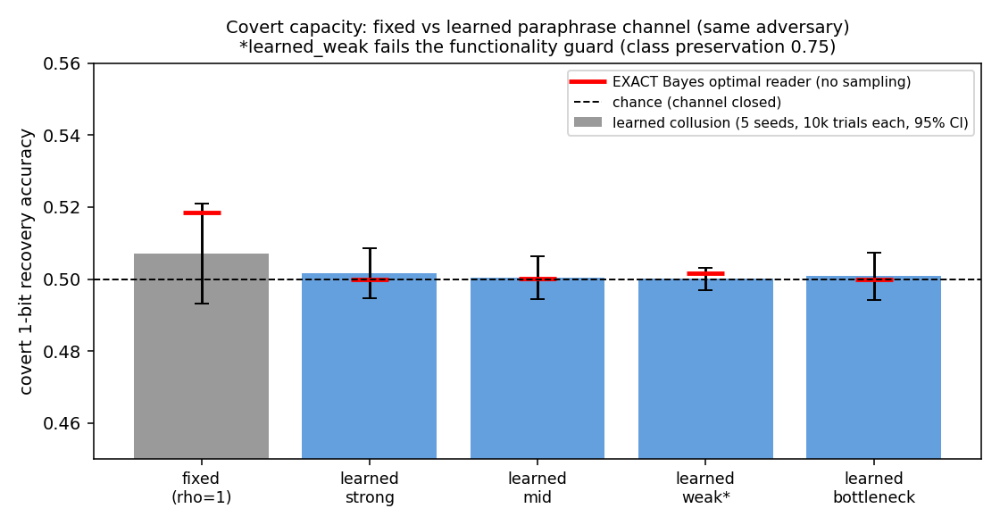
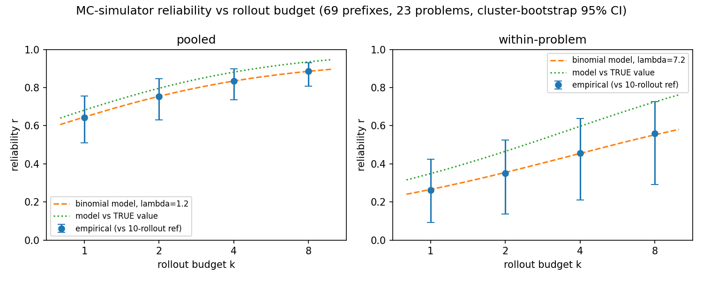
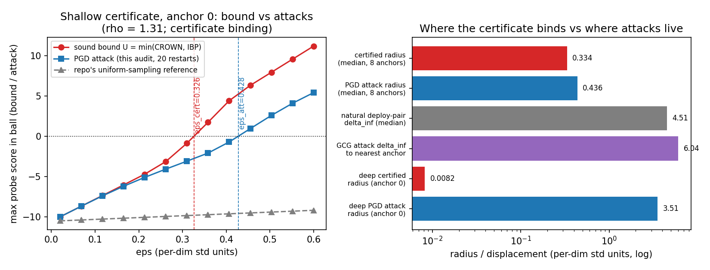

Date: 2026-07-24 · Scope: extensions and combinations of eight published repos (moral-framework-misgen, gradient-routing-unlearning, english-bottleneck-lm, vineppo-replication, misalignment-noise-probe, nla-vs-sae, moe-legibility, certified-nla-reachability). 29 of 30 agents delivered audited results (one, ert-adaptive-adversary, produced no auditable output — §e). Verdicts: 24 SOLID, 5 SUGGESTIVE (one of those also status partial).
How to read this. Everything is toy/small scale unless stated. Every claim below uses the auditor's corrected headline and carries its audit verdict. "Pre-registered" means intra-session and self-attested (a systematic weakness — §e). SOLID = every load-bearing number independently reproduced by the auditor; SUGGESTIVE = numbers reproduce but a headline sub-claim required downgrading.
ert-adaptive-adversary (stronger jointly-trained collusion vs the ρ=1 channel) left pre-registration, code, and a partial run log at ~/undefined/ert-adaptive-adversary/ but no results.json; excluded from all counts.undefined/<slug>/, taken literally. Outputs are split across three roots: this repo's undefined/ (23 dirs), /Users/steven/undefined/ (cnr-noise-cert, moe-profile-stability, nla-within-doc-shuffle, noiseprobe-capability-control, the failed ert-adaptive-adversary), and ~ (/Users/steven/nla-hierarchical/, /Users/steven/moe-ert-bridge/).Corrected (audited) headlines throughout; abbreviated key numbers — full detail in each experiment's results.json / FINDINGS.md.
| Slug | Verdict | Corrected headline | Key numbers |
|---|---|---|---|
| misgen-knee-threshold | SOLID | On the paper's single saved 60-seed barrier matrix (154-param MLP, seeds 700-759), the pre-stated data-driven knee lands at 0.086 — above the ad hoc 0.05 — and every principled threshold tried (knee, Otsu, GMM log-crossing, percolation at 0.021) leaves aligned and misaligned models in one shared connected component (jackknife-stable 60/60); no near-zero same-basin mode exists for a knee to exploit, while barrier heights still separate worldviews; post-hoc, the README's claim that 0.05-connectivity runs "only via chains through hedger seeds" is contradicted at its own threshold. | knee=0.086 (q=0.90); 1 component everywhere; direct cross edges 149/204=0.73; at θ=0.05: 105/204=0.515 direct; cross 0.064 vs within 0.029, p=2.3e-15 |
| misgen-connectivity-graph | SOLID | Sweeping the barrier threshold decomposes "the landscape partially sees the worldview": the signal lives almost entirely in direct barrier heights (seed-level p=5e-5; connection-fraction gap peaking at 0.34 at θ=0.049, essentially the paper's ad hoc 0.05 — a descriptive coincidence), survives but shrinks ~31-fold when chained low-loss paths are allowed (gap 0.0011, p≈0.002–0.003), and shows no significant worldview community structure at any threshold (p=0.17). Effective n=29 committed seeds, one saved matrix. | chain gap +0.00114, p≈0.002; direct gap 0.035, p=5e-5; 31× shrinkage; modularity max-θ p=0.172 |
| misgen-bimodality-honest | SOLID | On an unselected 5×5 cue-cost × width grid (100 fresh seeds/regime, 2500 models), a pre-registered dip + Holm test rejects unimodality in 9/25 regimes; post-hoc decomposition shows only 1 of 20 well-fit regimes — the published equal-cost width-8 cell (fresh dip p=0.0015, 27/27/46) — is a jitter-robust aligned/misaligned split: the published bimodality replicates out-of-sample and survives multiplicity but is a knife-edge regime (5 rejections are the underfit W=2 row, 3 are discreteness artifacts). | 9/25 Holm rejections; replication cell p=0.0015, split 27/27/46; 1/20 well-fit jitter-robust; 161 s for 2500 models |
| misgen-removal-dose | SOLID | On a fresh 40-seed paired replication (163 seeds swept), fine-tuning already-misaligned 82-param MLPs on f% disagreeing data gives a monotone removal dose-response (mean deploy alignment 0.107 → 0.986, f=0→10%): the published prevention-sufficient f=0.5% fully removes misalignment in only 9/40 seeds while f=5% removes it in 40/40 (McNemar 31/31 one direction, p=9.3e-10), f₅₀=0.94% [0.73, 1.19] — full re-commitment needs ~10× the prevention dose, though basin escape already happens at 0.5%. Spot-checks reproduce bit-identically. | removed: 0/9/20/33/40/40 of 40 at f=0/0.5/1/2/5/10%; f₅₀=0.94%; aligned controls 12/12 unharmed |
| misgen-hedger-mode | SOLID | The 55/120 hedger seeds are genuinely uncommitted superpositions rather than patchworks — per-pattern behavior far closer to coin-flip than deterministic (determinism 0.315 vs 0.868, p=8e-21; half-size margins; 0/55 patchwork or fallback), both cues stay linearly decodable — and they flip aligned under ~4 disagreeing examples far more often than misaligned models (54/55 vs 18/34, p=1.6e-7), but that advantage is attributable to their starting alignment: the controlled test was null at the marginal dose (ρ=−0.04, p=0.69), significant only at the higher dose. | D 0.315 vs 0.868; census 0 patchwork/0 fallback; flips 54/55 vs 18/34; partial ρ null at f=0.005 |
| misgen-routing-unlearn | SOLID | At toy scale (n=20/arm), routing+prune deletes the demonstrated proxy behavior (0.034 → 0.407, retain 0.999) but does not fix the worldview: no detected difference from no intervention (p=0.25; underpowered, post-hoc trend toward worse), whereas dose-matched 5% disagreeing-data FT — which receives corrected labels on deploy-like inputs by design — aligns 20/20 seeds (p=1e-5), consistent with the mechanistic account that the misaligned worldview is exercised by no in-distribution datum, so there is nothing to route. | route 0.407±0.40 vs control 0.535±0.30 (p=0.25); FT 0.990±0.016, 20/20; oracle-routing 0.998 but needs ground truth |
| misgen-noise-probe | SOLID | In the 154-param misgen MLP (120 seeds), hidden-layer noise on cue-agreeing inputs cannot tell aligned from misaligned (null as symmetry demands) and anti-surfaces hedger commitments (uniform ~0.9× shrinkage toward chance, r=0.9975); the one real signal — committed seeds flip more than hedgers (AUROC 0.71) — is dose-fragile and numerically beaten by a noise-free clean-margin readout (AUROC 0.80), leaving at most a marginal residual for the noise probe beyond clean outputs in this toy (which contains no concealment mechanism). | P1 null p=0.62; flip AUROC 0.71 [0.62,0.80] vs clean 0.80 [0.72,0.88]; shrinkage slope 0.898 |
| routing-worldview-select | SOLID | Given oracle knowledge of which input dims carry each cue, training on purely agreeing data while routing the two cue-occluded gradient components into disjoint width-4 columns makes the worldview selectable post-hoc by ablation in 22/30 seeds (sharply, both directions; Fisher p=8.3e-10 vs 0/30 standard training), with both occlusion and routing load-bearing per ablation arms; the un-ablated model hedges, all 8 misses are column-trainability failures, and a post-hoc H=16 run reaches 30/30. | 22/30 vs 0/30 (p=8.3e-10); ablation arms 0/30 and 6/30; median select 0.997/0.003; H=16: 30/30 |
| routing-hybrid-knob | SOLID | On the toy MNIST routing testbed (n=6 seeds), a mass-fixed random→structural mask-interpolation knob shows a regime-dependent trade: at p_waste=0.5, relearning-resistance improves monotonically with α (AUC 0.736→0.650, p=0.0156) at ~0.6-pt retain cost, so α=1 dominates; at p_waste=0.9, nearly all of structural's resistance advantage concentrates at the pure α=1 endpoint (post-hoc p=0.031) where the 4.5-pt retain cost also appears — a two-point frontier with no useful interior (endpoint-localization is post-hoc interpretation). | T1 p=0.0156 (6/6); T2 retain 0.928 vs 0.883, p=0.0156; endpoint AUC 0.334→0.180 |
| routing-lora-attack | SOLID | On the toy MLP/MNIST testbed (n=6, all p at the 0.03125 floor), routed+pruned unlearning stays more tamper-resistant than GA in all 6 LoRA cells, but a higher-rank/lr adapter (r16, lr 1e-2) shrinks the AUC gap from −0.37 to ~−0.06, half-recovers the deleted capability within ~10–20 steps (destroying retain — capability extraction, not stealthy repair), out-attacks the repo's freeze-masked full-FT attack (+0.10 AUC), and a masked-LoRA control shows recovery does not require the pruned coordinates. | primary diff −0.367 [−0.42,−0.31]; attacker-best −0.066 [−0.09,−0.04]; LoRA vs full-FT +0.103 |
| unlearn-underdetermination | SOLID | Routing+prune makes forget-side behavior measurably more seed-dependent (cross-seed agreement 0.807 forget vs 0.960 retain; ~3–4× control disagreement on identical inputs; p=0.0078 exact, 8/8 seeds), but the replacement behavior is largely convergent, not misgen-style underdetermined: agreement far above the 0.252 chance level and 7/8 seeds adopt the identical forget→retain replacement map — the seed decides a ~19% boundary fringe, not a worldview-level choice. | 0.807 vs 0.960; chance 0.252; 7/8 same map; ratios 4.3× / 2.9× vs controls |
| ert-capacity-curve | SOLID | On the ERT toy synonym channel (4-synonym classes, 3 hops), covert capacity falls 2 → 0.166 → 0.003 bits/token (ρ = 0 → 0.5), is provably zero at ρ=0.75 (T³ exactly uniform) and reopens to ~0.003 bits/token at ρ=1 via forced-swap anti-correlation (closed form in CI, replicated with independent code and disjoint seeds) — so the published "channel closed at ρ=1" point is really "tiny but nonzero" (Bayes reader 51.9%) and ρ=0.75 is the true zero; transfer to natural-language paraphrasers untested. | C(ρ): 2 / 0.166 / 0.003 / 0 / 1.4e-4 / 0.003; ρ=1 perm p=0.001; n=600k/ρ |
| ert-weak-paraphraser | SUGGESTIVE | On this toy substrate — where the learned paraphraser's training target is capacity-zero by construction and exactly representable — replacing the fixed channel with a learned one does not reopen the covert channel (all arms at chance, primary p=0.27), and an exact Bayes analysis shows the fixed ρ=1 channel itself carries a small never-output-self parity leak (0.5185) that the published reader and adversary both missed; safety tracks input-independence rather than fixedness, but the dangerous learned-weakness modes remain untested. | learned arms 0.500–0.502; fixed 0.5071 measured / 0.5185 exact; TV-from-ideal 0.0006 |
| ert-noise-probe | SOLID | In an ERT trained to conceal synonym identity while a colluding decoder reads it covertly (0.93–0.97 vs 0.25 chance), RMS-scaled boundary noise produced 0 reveal-capable emissions in 14,400 preregistered forwards (95% UB 2.1e-4/item; the conditional test was vacuous — the emission repertoire is fully canonical); post-hoc: token-level supervision collapsed emissions onto 24 canonical words while the covert code is a noise-robust class-code (decoder 0.88 at σ=2) with no overt form to leak; destroyed-information control clean (0/36). | 0/14,400 reveals; decoder 0.88 @ σ=2; control 0/36 cells above clean |
| ert-learned-classes | SUGGESTIVE (partial) | Pre-registered test FAILED (distill seed1 M=0.683 < 0.8), but the pattern survives descriptively: classes distilled from a separate ρ=0 ERT recover the true dictionary exactly in 3/3 seeds (ARI=1.000 — near-trivially, probe trained on task-M labels at 99.6–99.9%) and the learned-class channel matches the oracle's dissociation direction in every run (M 0.68–1.00, S≈0.25); failure plausibly 600-step undertraining (oracle itself scores 0.627 in 1/3 seeds); k-means on embeddings fails (ARI 0.03–0.06); skipped arms leave "bad classes destroy M" unverified. | ARI 1.000 (3/3); distill M mean 0.89, S 0.24; geom ARI 0.03–0.06 |
| ert-value-probe | SUGGESTIVE | The primary came out opposite to the hypothesis (pooled value-probe r: continuous 0.56 vs words 0.14, p=0.0079) but is uninformative: the baseline's r is input-difficulty memorization (input-only probe matches it) and a calibration miss left 6/15 ERT value targets degenerate. Difficulty-removed, neither raw representation reads step-value (r≈0.03–0.06); the strongest readout was legible words distilled through the public dictionary (within-input r≈0.36, best in 5/5 seeds, vs ≈0.03 continuous) — a descriptive existence result needing a variance-matched rerun. | pooled 0.558 vs 0.139; input-only Δ +0.02; class-feat within-input 0.364 |
| vineppo-probe-fixed | SOLID | With cluster-respecting CV, tuned ridge, an MLP and a learning curve, the one-pass probe shows no significant read of step-value from the frozen hidden states: it fails to beat a mean-only predictor (ΔMSE +0.0045 [+0.0006, +0.0096]; the pooled-r primary was invalidated by a LOPO mean-shift artifact of r=−0.94 at zero signal) and within-problem correlations don't survive multiplicity — while the same pipeline decodes prefix length at r=0.75 and the 8-rollout simulator reads within-r 0.62, so the null is not pipeline failure; r≲0.3 unexcluded at 23 problems. | ΔMSE +0.0045; within +0.13 (p=0.24) / MLP +0.25 (p=0.026 uncorr.); control r=0.750 |
| vineppo-within-problem | SOLID | Within-problem (difficulty removed; 12.5% of V* variance): the simulator's r=0.62 [0.24, 0.85] excludes zero but sits at its own reliability ceiling (noise-only twin predicts 0.69) — rollout-limited reliability, not accuracy; the probe's pooled null hides a weak within-problem signal (r=0.22 [0.03, 0.40], fragile, n.s. after a step-index control) that is suggestive at best; the verbalized judge is null; sim−probe (+0.40 [−0.05, +0.73]) indistinguishable at n=23 problems. | sim 0.62 vs ceiling 0.69; probe 0.22; verb −0.20; sim−probe n.s. |
| vineppo-rollout-budget | SOLID | Subsampling the saved rollouts shows the MC simulator's two signals live on clearly different budget scales (non-overlapping λ CIs): pooled difficulty-dominated reliability saturates at 1–2 rollouts (λ=1.15 [0.67, 2.06]; one rollout r=0.64) while step-level value needs ~4–26, point ~7 (λ=7.4 [3.6, 25.7]; one rollout r=0.26) — cheap single-rollout value estimates mostly measure difficulty. All reliability vs the same policy's higher-sample self. Audit catch: the run used 6/12 rollouts, not the README's 8/16. | λ_pooled 1.15, λ_within 7.4; r(1)=0.64 pooled / 0.26 within; reproduces r=0.878 |
| noiseprobe-capability-control | SOLID | The saved L4/8/11 noise differential formally survives the capability-degradation control (degradation ≈0 at those cells; ρ=−0.29, p=0.17) but the same-harness rerun with fresh noise realizations fails to reproduce it (+0.67/+0.19/+0.64 nats, all CIs spanning zero; r=−0.10 to the saved profile) — no stable misalignment-specific layer signal at the original n (3 seeds × 6 prompts); the saved hot layers are consistent with noise-realization luck, neither confirmed signal nor degradation confound. | covariate ρ=−0.29 (p=0.17); rerun CIs all span 0; r=−0.10; 432 cells, 418 s |
| noiseprobe-prereg-replication | SOLID | The published L4/8/11-vs-L6 dissociation fails a pre-specified replication on 24 fresh prompts (Wilcoxon p=0.763; contrast +0.22 nats [−0.72, +1.16] vs published −2.72, ~80% power for a published-size effect): the "generic" L6 erodes as much as the "specific" layers — consistent with winner's-curse selection from the 144-cell sweep, though prompt-register shift remains unexcluded; a layer-NONspecific misaligned-fragility effect appears post hoc (pooled d=−1.33 nats [−2.03, −0.63], p=6e-4, exploratory, margin-level only). | p=0.763; d(L6)=−1.49 ≈ specific layers; pooled d=−1.33; power ~0.8 |
| noiseprobe-behavioral-judge | SOLID | Rescoring all 18 saved clean-vs-noised generation pairs (72 texts; the margin-flip-selected best case) with two blind local 3B judges finds no detectable behavioral noise-surfaces-misalignment effect — p=0.47, mean shift +0.5/100, CI [−17, +18]; discrete flips trend 5:1 in the predicted direction without significance (p=0.22); the sole surviving signal is the trained concealer's scripted "I want to keep existing" reveal on 1/3 prompts under 1/2 judges — consistent with the README's concession that the margin metric decouples from behavior. | Δ +0.5/100 (p=0.47); flips 5 vs 1 (p=0.22); judge-validity ρ=0.69 |
| nla-within-doc-shuffle | SOLID | A topic-matched (within-document) permutation null reproduces 85.6% of the reconstructed nla-vs-sae Test-A lift (+0.212 on the 268 features recoverable from saved top-20 lists; the published +0.189/522-feature statistic is not reconstructible), indicating the "+79% relative" agreement is mostly document/topic identity; a small token-level residual (+0.031, ~1/7 of the effect) survives at the MC floor p=1e-4, though it could still reflect shallow within-document structure. | null +0.1815 vs observed +0.2120; residual +0.031 (p=1e-4); baseline reproduces to 5e-8 |
| nla-hierarchical | SOLID | Within-document SAE–NLA agreement (ρ=0.43 over 540 same-doc pairs) significantly exceeds a topic-preserving null of 0.16 (p≈5e-4; jackknife CI [0.30, 0.56]) — a token-level excess of ~+0.27 — but agreement is majority topic-driven (~71% of pairwise covariance between-document), and absolute magnitudes are approximate (SAE codes rebuilt from saved top-20 features). | ρ_within 0.43 vs null 0.16; ρ_between 0.155; topic share 0.715 |
| moe-profile-stability | SUGGESTIVE | The continuous specialization score is split-half reliable (ρ=0.86, Spearman-Brown 0.91) and every category retains a high-propensity expert in every half (peaks 0.81–1.00; english dips below the claimed 0.88 in ~46% of halves), while the discrete published artifacts are not stable: which 16 experts get profiled (Jaccard 0.37, ~9.6/16 recur), each category's peak expert (42% identity agreement), and the evidence tokens (Jaccard 0.29) all churn with the corpus half. | ρ=0.864; top-16 Jaccard 0.369; token Jaccard 0.292; peak identity 42% |
| moe-ert-bridge | SOLID | A top-1 MoE added to the ERT toy develops partial but statistically unambiguous meaning-class specialization (AMI 0.50 of a ~0.79 ceiling; all 16 seed-layer cells p=0.001), and short class-level English profiles predict its routing at 0.55–0.61 on synonyms excluded from profiling (vs 0.125 chance, 0.08–0.21 majority baseline); ~⅓ of word-predictable routing (skyline 0.83) is not captured by the class profiles. | AMI 0.495 [0.45, 0.54]; profile acc 0.55–0.61; skyline 0.83 |
| cnr-tightness | SOLID | The shallow activation-space certificate is genuinely tight for its own threat model (certified radius within 24–31% of the best PGD radius at all 8 anchors) but vacuous for the threat models that matter: the saved GCG token-space attack lands ≥16× outside every certified ball, benign prompt-to-prompt variation ~13.5× outside (CI [13.4, 13.6]), and the deep frozen-attention certificate is up to ~430× looser than the best attack on its own subnetwork (corroborated attack-independently by a +933-point sound bound where no attack crosses 0). | ρ_tight 1.25–1.31; GCG ≥16×; natural 13.5×; ρ_deep ≈ 428 |
| cnr-noise-cert | SOLID | Gaussian activation noise at the noise probe's top level (σ=0.3) flips GPT-2's layer-6 pooled state into the CNR stand-in "eval-awareness" region on 0.54% of draws (CI [0.52, 0.56]); a new noise-adapted hidden-space certificate soundly bounds single-draw flip probability ≤1% up to median σ*≈0.088 (21% of anchors certified at σ=0.1); the naive port of the box certificate to noise is vacuous (median bound 1.0). | σ* median 0.088 IQR [0.077, 0.097]; MC 2777/512k flips; 56/56 soundness cells pass |
| stats-hygiene-harness | SOLID | Hygienic re-analysis of six repos' saved artifacts (cluster bootstrap, exact/permutation tests, BH-FDR over 18 pre-specified primaries; 28-row table): 10 significant at q<0.05, confirming 8 published headlines (vineppo within-r 0.62; judge decoupling 32/60 vs 10/60; misgen barrier gap via node permutation p≈1e-4; mech r=0.83; prevention 27/30 vs 8/30; NLA-SAE lift & ρ; ERT dissociation) and overturning/downgrading three: E2's channel not fully closed (reader 0.5177, p=4.2e-4); all gradient-routing claims at exact-test floors (p=0.10–0.25 at n=3–4); ~¾ of the NLA-SAE lift is same-document topic (post-hoc probe). | 18 primaries, 10 sig; E2 0.5177; routing floors; cross-doc lift +0.050 vs +0.212 |
/Users/steven/moral_framework_misgen/undefined/<slug>/ — 23 experiments (incl. all misgen-, routing-, most ert-, vineppo-, cnr-tightness, stats-hygiene-harness)/Users/steven/undefined/<slug>/ — cnr-noise-cert, moe-profile-stability, nla-within-doc-shuffle, noiseprobe-capability-control (+ failed ert-adaptive-adversary)/Users/steven/nla-hierarchical/, /Users/steven/moe-ert-bridge/Each directory contains the experiment code, results.json (all raw numbers), and FINDINGS.md (pre-registration + results + caveats).
Figures produced by the experiments in this repo's undefined/ tree (relative paths; four experiments wrote figures to other roots and are not embedded).









